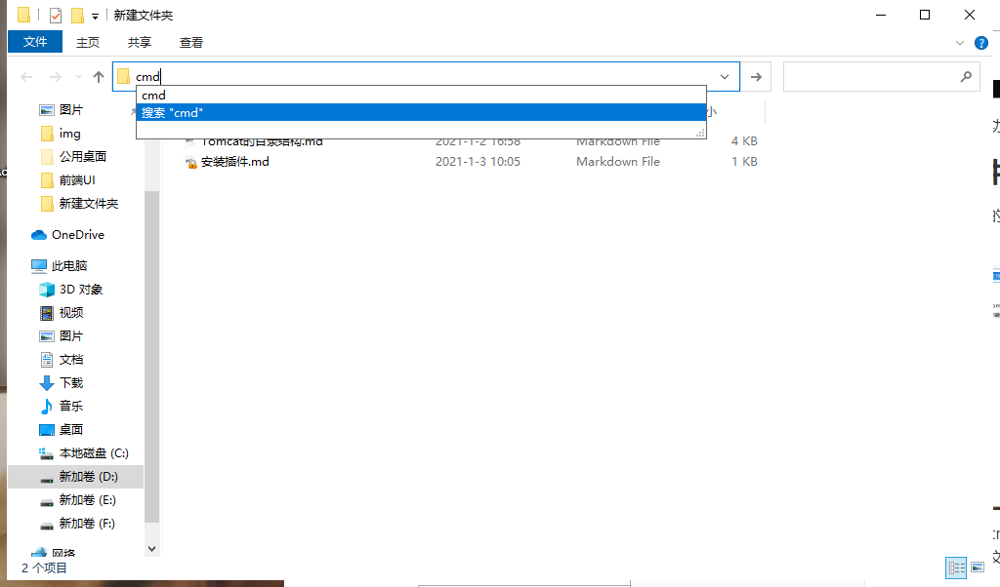
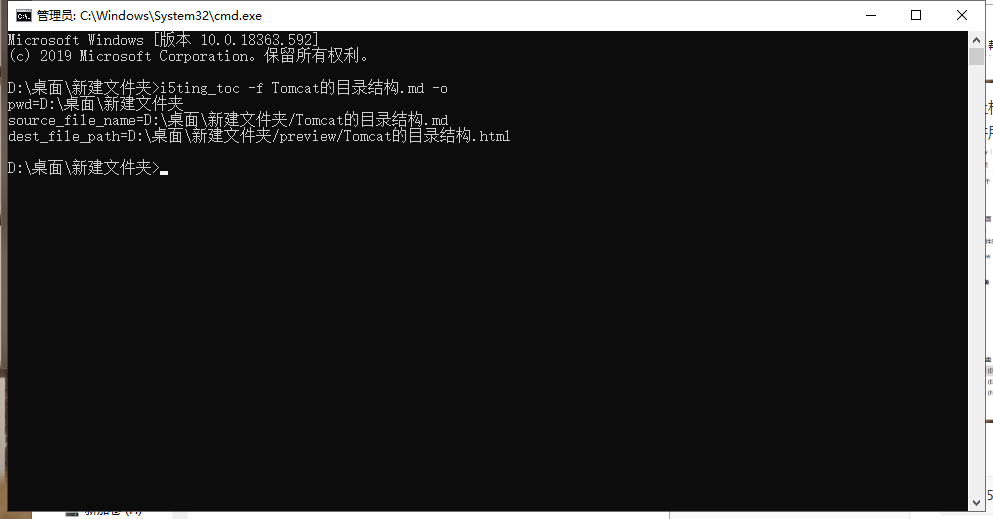
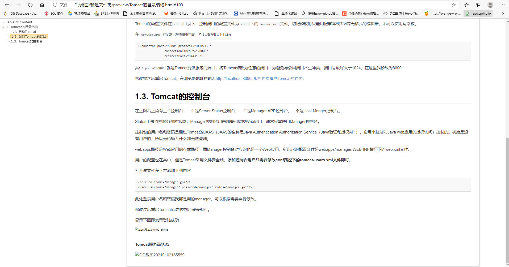

Markdown生成带侧边目录的HTML
在使用Markdown文件生成说明文档的时候一般需要加侧边目录，但是Markdown本身的目录只能在上方显示，这里我选择使用一个插件来生成侧边目录。
安装插件
使用了node.js，没有安装的话自己安装，安装插件下载过慢的话换淘宝源或者清华源
点击win+r，输入cmd点击回车打开。
输入
1 | npm install -g i5ting_toc |
出现添加包成功代表安装成功
生成文件
打开需要生成的md文件所在目录

在地址栏输入cmd点击回车。（这样操作省去了使用cd将目录移动到文件所在的文件夹的步骤）
输入
1 | i5ting_toc -f Tomcat的目录结构.md -o |
Tomcat的目录结构.md是我的文件名，需要根据自己的文件名去修改。
下面输出的三行分别为文件所在文件夹、目标文件和生成的文件。
推荐将Markdown中使用的图片都放在一个单独的文件夹，并将文件夹和Markdown放在一个文件夹中，将图片路径设置为相对路径，这样如果生成的HTML文件图片不显示只要将图片文件夹复制一份放到preview文件夹中就正常显示了。
可以看到生成的文件已经加了锚点，支持打开相应的链接直接跳转到相应的位置。
本博客所有文章除特别声明外，均采用 CC BY-NC-SA 4.0 许可协议。转载请注明来自 ZZY！
 微信
微信 支付宝
支付宝
评论